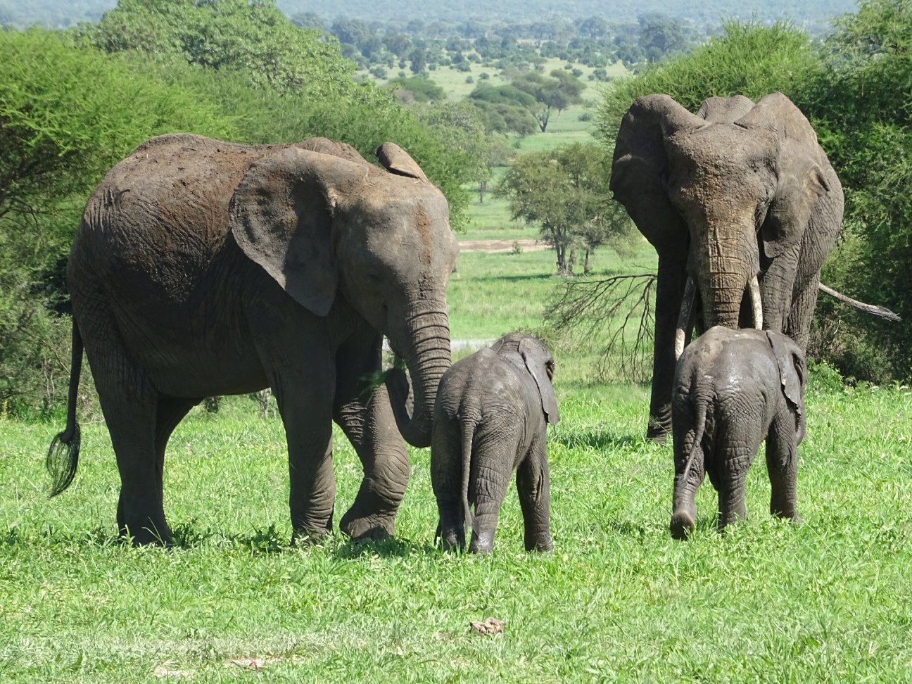
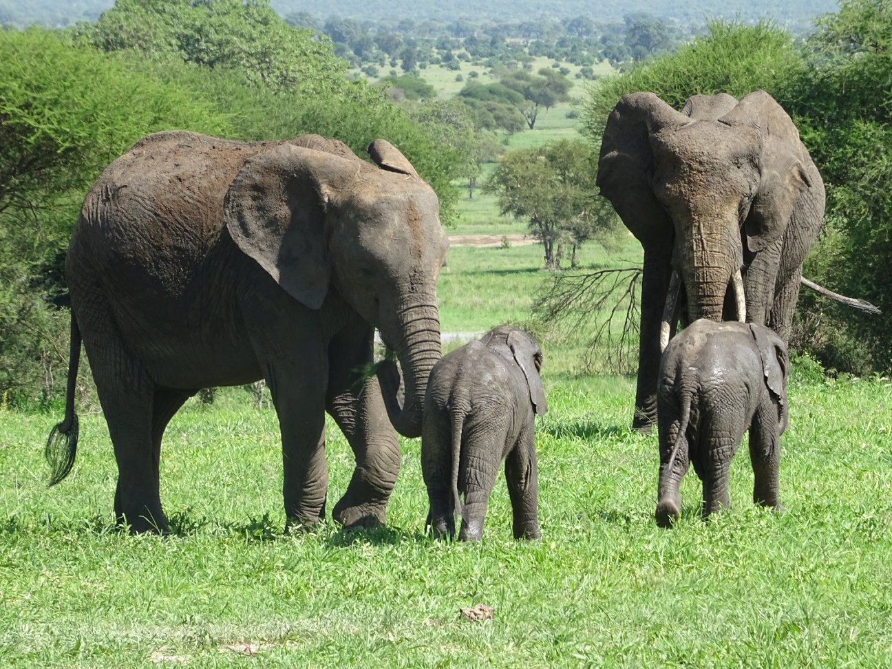
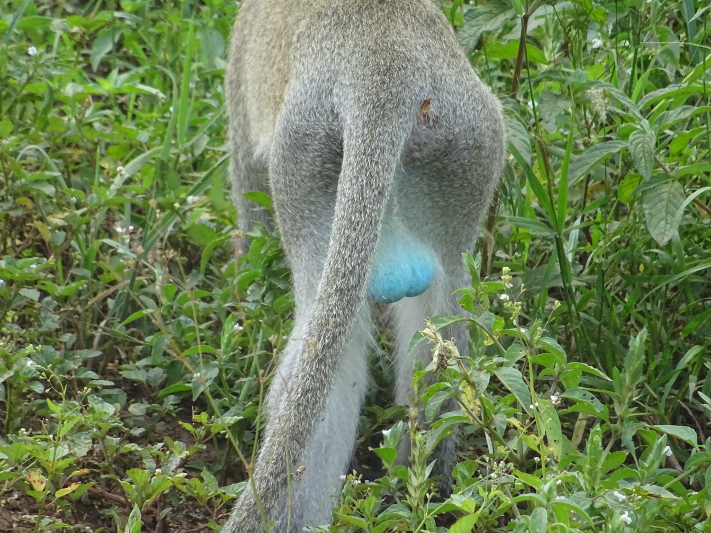
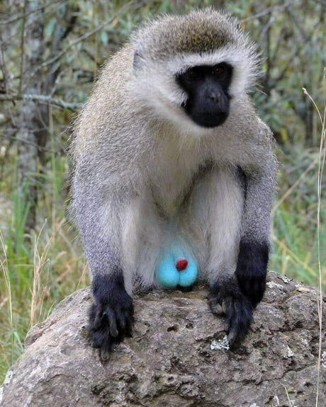
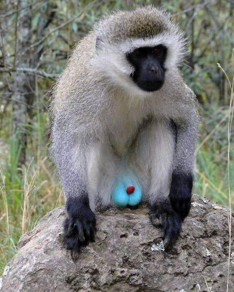
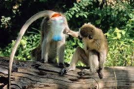
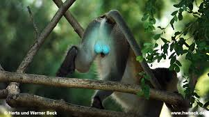
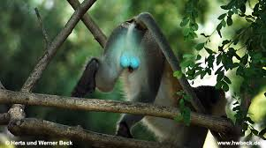

"La joya natural de África"
De la serie "Habitantes Maravillosos"
Una vez fui muy afortunada y viví una extraordinaria aventura en África. Pude contemplar animales majestuosos en su hábitat salvaje, disfrutando su libertad, mostrando su imponente figura y temperamento, mientras que otros me conquistaron a través de carisma y pura belleza.
No puedo decir cuan intensa fue la experiencia para mi. Supongo que mis sentimientos fueron los normales para cualquiera en esa situación: vida extendiédose por todos lados, una miriada de mundo natural rodeándonos, envidiables caricias y mimos compartidos entre animales de la misma especie, y los más alucinantes sonidos (el "roar" de leonas y leones, el cantar de muchas aves diferentes, el golpe en la tierra de manadas de búfalos, el onduleo de las orejas de los elefantes en el aire)… Fue muy difícil contenerme de tratar de tocarlos, pero debo reconocer que el miedo era importante también: en la selva no hay regla que valga.



Pero lo que quiero presentarles en este artículo, es un animal que me trajo felicidad y alegría y que me hace reír incluso hoy cuando lo veo.
Después de todo, no es necesario contar con súper poderes, ser inmortal o estar rodeado en misterio para ser considerado un ser vivo increíble! Basta con ser muy original y divertido! Un habitante de este planeta puede sorprendernos con cualidades impensables! Así que... qué opinan de este maravilloso monito?
Declaración de divulgación: los siguientes apartados contienen "partes nobles" y pueden no ser apropiadas para menos de edad.
No puedo decir cuan intensa fue la experiencia para mi. Supongo que mis sentimientos fueron los normales para cualquiera en esa situación: vida extendiédose por todos lados, una miriada de mundo natural rodeándonos, envidiables caricias y mimos compartidos entre animales de la misma especie, y los más alucinantes sonidos (el "roar" de leonas y leones, el cantar de muchas aves diferentes, el golpe en la tierra de manadas de búfalos, el onduleo de las orejas de los elefantes en el aire)… Fue muy difícil contenerme de tratar de tocarlos, pero debo reconocer que el miedo era importante también: en la selva no hay regla que valga.

Pero lo que quiero presentarles en este artículo, es un animal que me trajo felicidad y alegría y que me hace reír incluso hoy cuando lo veo.
Después de todo, no es necesario contar con súper poderes, ser inmortal o estar rodeado en misterio para ser considerado un ser vivo increíble! Basta con ser muy original y divertido! Un habitante de este planeta puede sorprendernos con cualidades impensables! Así que... qué opinan de este maravilloso monito?
Declaración de divulgación: los siguientes apartados contienen "partes nobles" y pueden no ser apropiadas para menos de edad.

Sip! Lo que están mirando es real! No lo pinté yo!
Mi reacción instintiva fue gritar en voz alta “Blue balls!!!!” ("Bolas azules") con una sonrisa gigante en mi cara, todo el entusiasmo emanando por mis poros y casi aplaudiendo! El momento fue absolutamente vergonzoso, pero bueno, había sido tomada por total sorpresa por este maravilloso habitante de África!. De repente había encontrado una nueva especie para amar: Chlorocebus pygerythrus, también conocido como mono Velvet.

Mi reacción instintiva fue gritar en voz alta “Blue balls!!!!” ("Bolas azules") con una sonrisa gigante en mi cara, todo el entusiasmo emanando por mis poros y casi aplaudiendo! El momento fue absolutamente vergonzoso, pero bueno, había sido tomada por total sorpresa por este maravilloso habitante de África!. De repente había encontrado una nueva especie para amar: Chlorocebus pygerythrus, también conocido como mono Velvet.

Pero curiosamente, los monos Vervet sí exhiben un escroto azul brillante.
Ésta es -de hecho- la excepción a la regla, ya que es justamente un fenómeno de coloración estructural.

La coloración estructural es la producción de color a nivel molecular, por superficies muy finas, microscópicamente estructuradas como para interferir con la luz visible. En concreto, en el caso de los monos Velvet, el color azul de sus partes nobles se origina por el efecto Tyndall, significando el esparcimiento de la luz por la misma piel. Los arreglos de colágeno se encuentran altamente nanoestructurados a la precisa escala espacial para crear el tono observado. De verdad que querían llamar la atención, no?!!! Expertos en la materia dicen que un mínimo cambio en esa distancia habría generado otro color completamente diferente.
Pero entonces, cómo es posible? Bueno, por selección sexual! Ésta es la explicación del desarrollo de caracteres sexuales secundarios no relacionado a la supervivencia del mejor adaptado. Es decir, "ok, las bolas azules no te ayudarán a superar las condiciones de la sabana como indivio pero este rasgo físico te hará más atractivo para las hembras" (Por cierto a mi me atrajo, je!). Y esa parece ser la causa por la cual el espectáculo se encuentra limitado a los órganos sexuales. Qué lástima!!
Pero entonces, cómo es posible? Bueno, por selección sexual! Ésta es la explicación del desarrollo de caracteres sexuales secundarios no relacionado a la supervivencia del mejor adaptado. Es decir, "ok, las bolas azules no te ayudarán a superar las condiciones de la sabana como indivio pero este rasgo físico te hará más atractivo para las hembras" (Por cierto a mi me atrajo, je!). Y esa parece ser la causa por la cual el espectáculo se encuentra limitado a los órganos sexuales. Qué lástima!!
Hay seis especies pertenecientes al género Chlorocebus (C. pygerythrus, C. aethiops, C. cynosuros, C. djamdjamensis, C. sabaeus y C. tantalus), todos ellos con distintivos escrotos azules opacos desde nacimiento. Las diferencias se dan recién en la adolescencia, mostrando distintos tonos de azul. Pero mientras que la mayoría de ellos -e incluso otros primates que también gozan de tener un escroto azul brillante (como lesula o el mono verde)- observan el desvanecimiento del color al crecer, aún hasta el total blanco, para Chlorocebus pygerythrus, el monito que me voló la cabeza, "mi monito", sus huevillos se vuelven cada vez más azulados y brillantes a medida que pasa el tiempo, presumiéndolos como señal de maduración. Ellos pueden lucir orgullosos su "joya natural africana" sin fecha de vencimiento.
Por el contrario, aquí tenemos bolas aburridas! Pobrecito! Su cara lo dice todo! Se quiere morir!

Por el contrario, aquí tenemos bolas aburridas! Pobrecito! Su cara lo dice todo! Se quiere morir!
El mono Velvet tiene una espléndida audición y capacidad de interpretación de sonidos. Las madres pueden reconocer su cría con tan sólo un grito, y se han identificado al menos 30 llamadas diferentes que son empleadas para prevenir acerca de distintos peligros (predadores). Podría decirse que esta habilidad es "regular", sin embargo, éste sofisticado sistema de vocalización es primordial para su supervivencia, ya que la manada reacciona de manera específica en función de la amenaza detectada.
Por ejemplo, si el llamado alerta sobre la presencia de predadores en tierra (como leonas o leopardos), la acción que se despliega es una trepada de árboles, pero si la misma refiere al avistamiento de aves de presa, por el contrario, los monos se esparcen rápidamemte y se ocultan entre la vegetación. Si la alarma fue causada por una serpiente, lo que el grupo hace es… reunirse y enfrentarla, soltando su violencia instintiva y creyendo con mucha convicción que deben matarla para defenderse.
Por ejemplo, si el llamado alerta sobre la presencia de predadores en tierra (como leonas o leopardos), la acción que se despliega es una trepada de árboles, pero si la misma refiere al avistamiento de aves de presa, por el contrario, los monos se esparcen rápidamemte y se ocultan entre la vegetación. Si la alarma fue causada por una serpiente, lo que el grupo hace es… reunirse y enfrentarla, soltando su violencia instintiva y creyendo con mucha convicción que deben matarla para defenderse.
 No sé ustedes pero yo aprendí un montón durante mi investigación sobre las causas de las "bolas azules"! Me dió mucho sobre lo que pensar!
No sé ustedes pero yo aprendí un montón durante mi investigación sobre las causas de las "bolas azules"! Me dió mucho sobre lo que pensar!Qué habría sido de nosotros como especie si la selección sexual hubiera impuesto el mismo patrón que a nuestros primos cercanos, los monos Velvet?... O si dicho fenómeno, el efecto Tyndall, hubiera implicado una ventaja en el ambiente natural de manera que se hubiera esparcido por todo el cuerpo...?
Pueden imaginar nuestras vidas como grandes pitufos, una "bestia" menos impulsiva de las pelis de X-man o como ávatares de Pandora…?
Desde mi punto de vista, la escultura “King Kong Balls” (Bolas de King Kong), hecha por el artista francés Denis Defrancesco y exhibida en República Checa en 2019, es bastante cercana a mi imaginación al respecto…
Fin…
Gracias por leerme!!
Espero que hayas disfrutado mucho mi trabajo! No sólo redacté el texto del post sino que también escribí el código de la página web y su diseño. El desafío es grande pero soy una estudiante muy estusiasta. :)
Por favor, dame tu "ME GUSTA" y COMPARTÍ la publicación para ayudarme a expandir la comunidad de habitantes maravillosos! Si accedes a través de una computadora, recordá que podés dejar tu comentario al final de la página. O podés enviarme un e-mail, si querés!. De cualquier manera que prefieras voy a apreciar mucho tu apoyo!.
Si te gustó el tema, te invito a leer el contenido BONUS debajo.
Este tema de los colores es muy interesante!
No quiero inquietarlos, pero si tienen ojos azules deberían saber que se produce de la misma manera que el escroto azul de los monos Velvet.
 

Encuentro esto algo gracioso, pero a decir verdad es sólo otro ejemplo del efecto Tyndall, y para ser justa, también se corresponde con la razón por la que el cielo es azul. El estroma de nuestro iris no tiene pigmento, es traslúcido, así que la luz blanca es reflejada y esparcida. Por su parte, la luz del sol alcanza la atmósfera de la Tierra y es esparcida en todas las direcciones por los gases y partículas en el aire. El color azul se esparce más que otros colores porque su longitud de onda es más corta. Ojos azules, cielo azul (y pelotas azules).
Si quieren hacer su propia investigación, hay muchas otras situaciones comunes que representan este fenómeno: rayos de sol visibles, el esparcimiento de luces vehiculares en la niebla, humo de autos, etc.
Sin más que hacer, me despido por ahora! Hasta el próximo post!
Algunas fuentes:
Velvet por Britannica
"Algunos monos tienen testiculos azules — Aquí está el porqué" por National Geographic
Mono Vervet (Chlorocebus pygerythrus) por San Diego Zoo Wildlife Alliance Library
Coloración estructural por Wikipedia
"Por qué el cielo es azul?" por NASA Science Space Place
No quiero inquietarlos, pero si tienen ojos azules deberían saber que se produce de la misma manera que el escroto azul de los monos Velvet.
Encuentro esto algo gracioso, pero a decir verdad es sólo otro ejemplo del efecto Tyndall, y para ser justa, también se corresponde con la razón por la que el cielo es azul. El estroma de nuestro iris no tiene pigmento, es traslúcido, así que la luz blanca es reflejada y esparcida. Por su parte, la luz del sol alcanza la atmósfera de la Tierra y es esparcida en todas las direcciones por los gases y partículas en el aire. El color azul se esparce más que otros colores porque su longitud de onda es más corta. Ojos azules, cielo azul (y pelotas azules).
Si quieren hacer su propia investigación, hay muchas otras situaciones comunes que representan este fenómeno: rayos de sol visibles, el esparcimiento de luces vehiculares en la niebla, humo de autos, etc.
Sin más que hacer, me despido por ahora! Hasta el próximo post!
Algunas fuentes:
Velvet por Britannica
"Algunos monos tienen testiculos azules — Aquí está el porqué" por National Geographic
Mono Vervet (Chlorocebus pygerythrus) por San Diego Zoo Wildlife Alliance Library
Coloración estructural por Wikipedia
"Por qué el cielo es azul?" por NASA Science Space Place